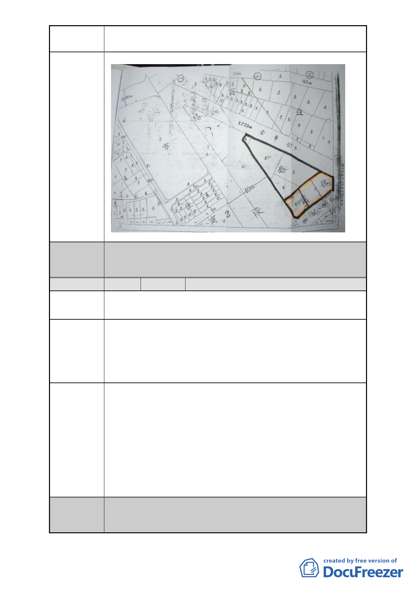

案名
變更臺北市中正區南海段一小段 719、724 地號等 2 筆停車場
用地為廣場用地細部計畫案
委員會
決議
編號
同編號 1。
10 陳情人
新營里里長 王郭秀琴
陳情地點 中正區南海段一小段 719、724 地號
陳情理由
建議辦法
本新營里鄰近就有中正紀念堂廣場，市民運動、休閒均到中
正紀念堂廣場，對於本里南海段一小段 719、724 地號為一塊
畸零地，都市計畫委員會將變更為廣場用地，里民認為都市
計畫委員會應從長計議，使本地段發揮最大效益，更帶動本
里經濟繁榮。
本里南海段一小段 719、724 地號變更為廣場用地，位處於中
正紀念堂三號出口，里民反應行動不便、年長者及殘障人士
上下捷運樓梯不方便，希望爭取捷運局增設電梯，以方便市
民搭乘捷運之便利，讓大眾運輸工具發揮更大效益！
中正 1206K03 停車場用地全體住戶為配合市政建設及鄰里之
發展，設置里民永久康樂中心，聯合里長向市政府都市計畫
委員提議，由交通捷運局主辦，朝立體多目標使用之規定，
聯合開發商業廣場，使居住在此超過 60 年以上之里民能就地
安置，繼續維持生計，達成雙贏之目標！
委員會
決議
同編號 1。
- 16 -